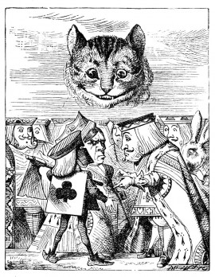

The moment Alice appeared, she was appealed to by all three to settle the question, and they repeated their arguments to her, though, as they all spoke at once, she found it very hard indeed to make out exactly what they said.
The executioner's argument was, that you couldn't cut off a head unless there was a body to cut it off from: that he had never had to do such a thing before, and he wasn't going to begin at HIS time of life.
The King's argument was, that anything that had a head could be beheaded, and that you weren't to talk nonsense.
The Queen's argument was, that if something wasn't done about it in less than no time she'd have everybody executed, all round. (It was this last remark that had made the whole party look so grave and anxious.)
Alice could think of nothing else to say but 'It belongs to the Duchess: you'd better ask HER about it.'
'She's in prison,' the Queen said to the executioner: 'fetch her here.' And the executioner went off like an arrow.
The Cat's head began fading away the moment he was gone, and, by the time he had come back with the Duchess, it had entirely disappeared; so the King and the executioner ran wildly up and down looking for it, while the rest of the party went back to the game.
